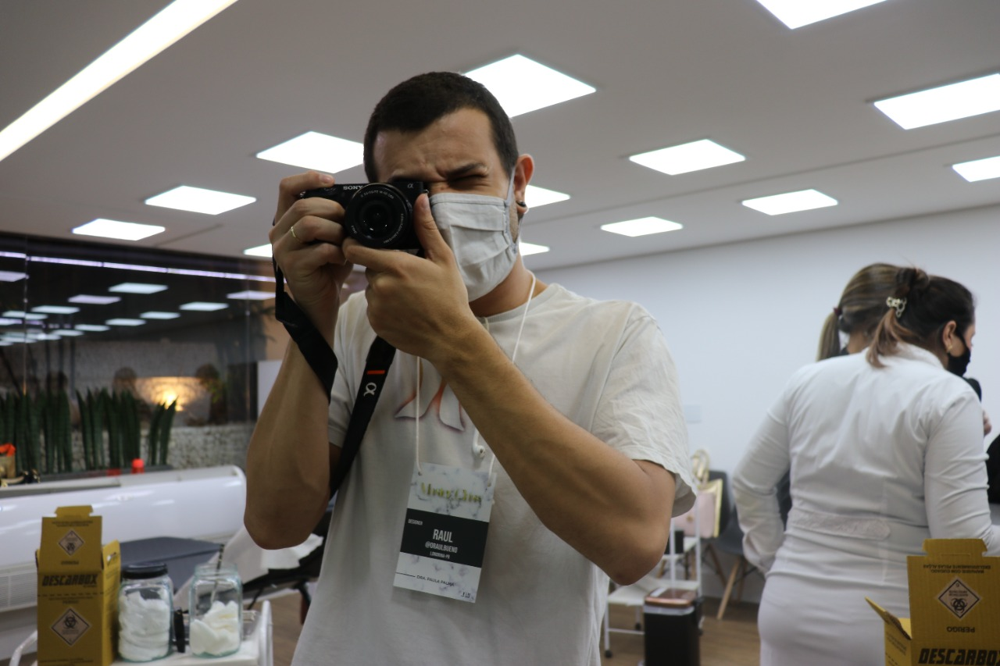
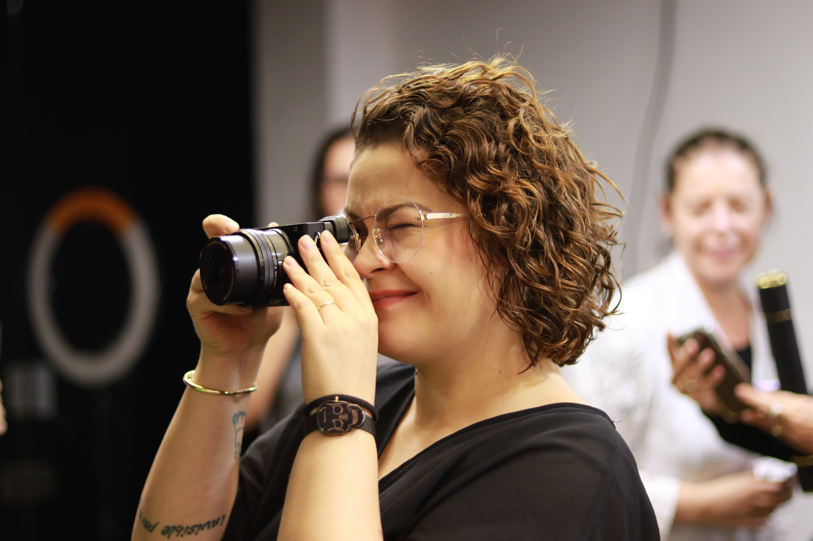
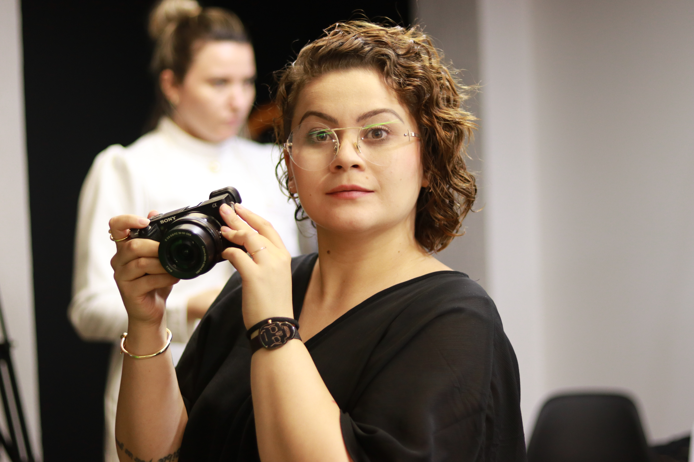
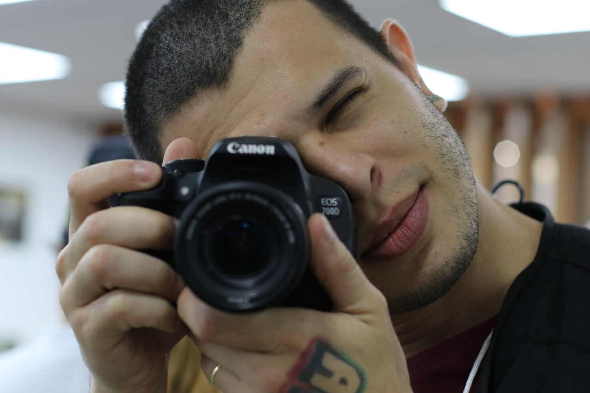
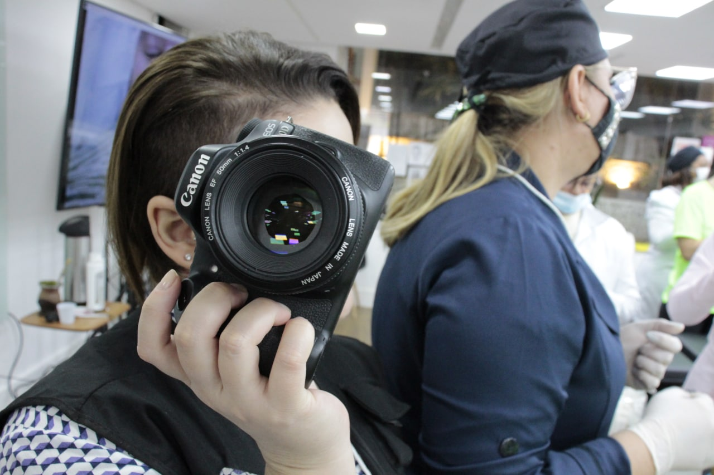
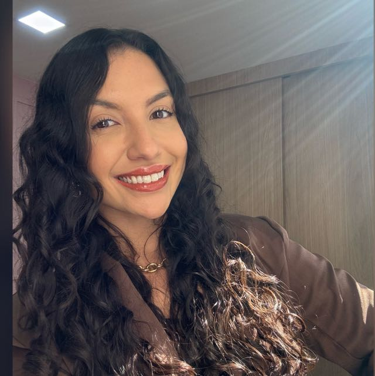
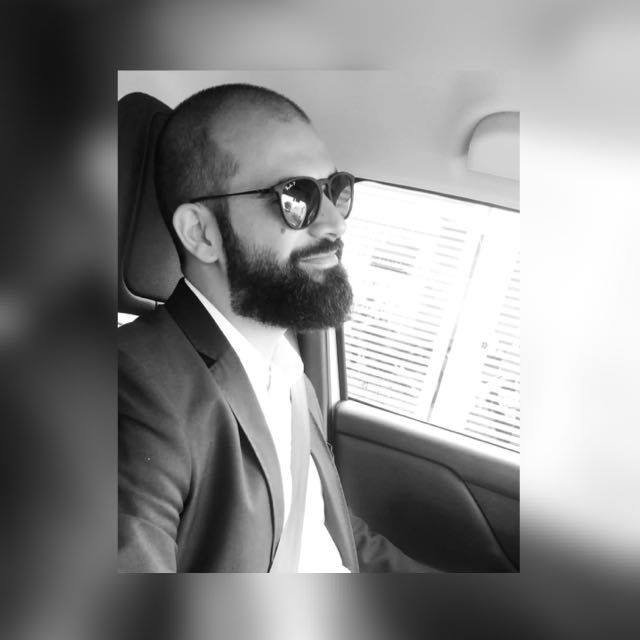
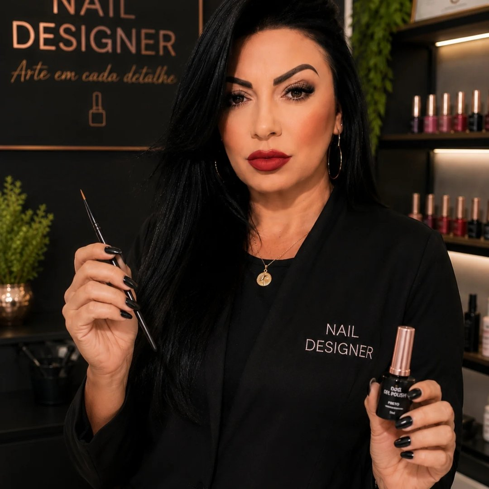
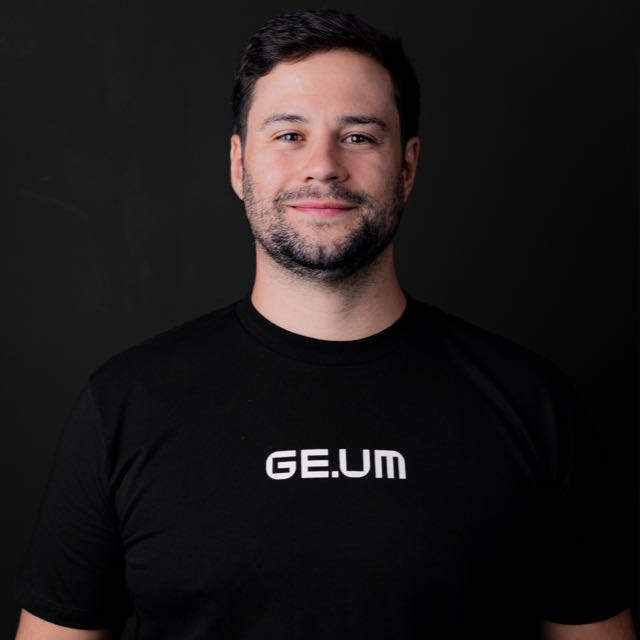

Entender
Negócio, contexto, cliente, equipe, produto e objetivo.
Branding • Marketing • Direção criativa
A gente entra no seu negócio antes de entrar no seu Instagram.
Showreel
Antes da solução
Às vezes é posicionamento. Às vezes é oferta, mídia, processo, discurso, página ou captação. Nosso trabalho começa descobrindo onde a marca realmente precisa avançar.
Negócio, contexto, cliente, equipe, produto e objetivo.
Escolher as frentes que fazem sentido e o que pode esperar.
Transformar estratégia em peças, campanhas, páginas e experiências.
Projetos selecionados
Competências
Como pensamos
Perguntar antes de criar.
Entender antes de anunciar.
Não seguir trend por obrigação.
Criatividade sem estratégia é decoração.
Dados ajudam a decidir.
Não substituem repertório.
Se uma ideia está ruim,
provavelmente vamos falar.
Quem está do outro lado

Design, branding, direção criativa, mídia e a mania de perguntar “por quê?” até alguma coisa fazer sentido.

Estratégia, conteúdo, social media e uma leitura afiada do que precisa ser dito, cortado, organizado ou melhorado.
Sim. Somos casados também.
Conheça a LosBuenos ↗Bastidores





Los Pensa
Personalidade também é saber o que não fazer.
Ferramenta boa libera repertório, não substitui provocação.
Nem todo intervalo precisa virar produtividade.
Prova social
Não acredita na gente?




Começar
Talvez a gente consiga descobrir o quê.
Conte pra gente